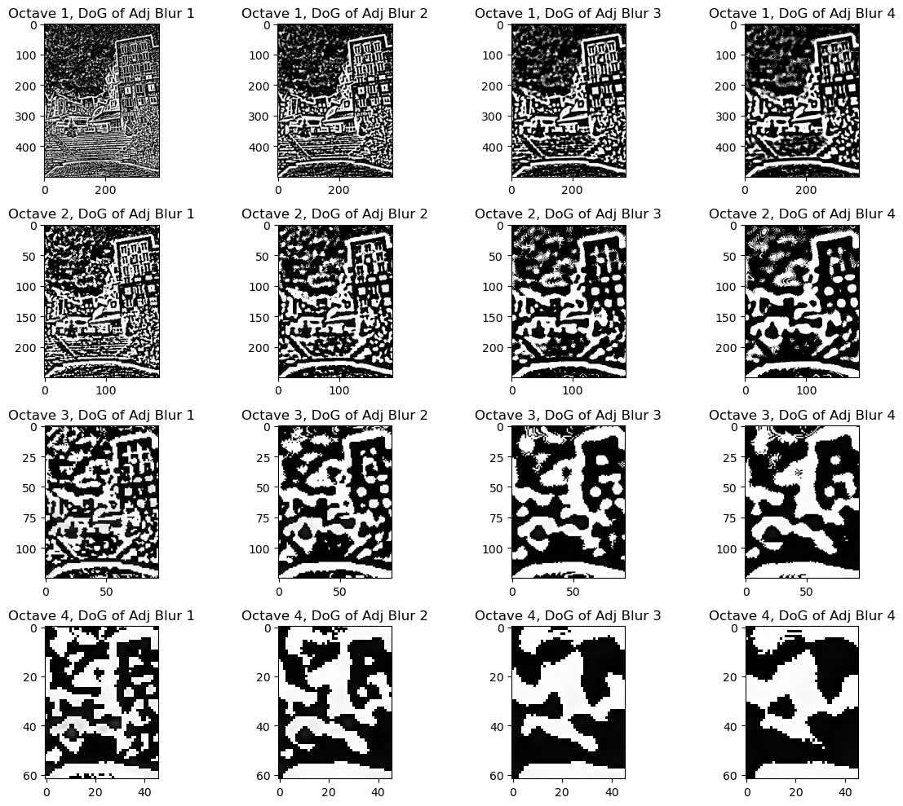
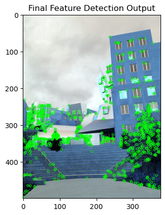

Table of Contents
Overview
This repository contains the MANUAL pythonic implementation of the Scale-Invariant Feature Transform (SIFT) algorithm using basic Python packages for computer vision applications. SIFT is a powerful algorithm for detecting and describing local features in images, known for its robustness to various transformations.
The purpose of this project is to understand the logic that enables the SIFT algorithm to produce highly reliable keypoints for image processing applications. This project is a step-by-step implementation of the work of Lowe, 2004 , covering the topic of keypoint detection.
Prerequisites
Before you begin, ensure you have the following requirements installed:
- Python 3.x
- NumPy
- OpenCV (cv2)
Usage
Open the keypoint-detection.ipynb to view the manual pythonic implementation of the SIFT algorithm for keypoint detection.
If you wish to use SIFT for your own project, OpenCV offers easy-to-use modules for implementing SIFT in 1-2 lines of code, but if you wish to (more easily) implement the exact steps I did in the notebook, you may refer to the keypoint-detection-modularized.ipynb.
Algorithm Overview
The SIFT algorithm implemented in this project follows these main steps:
- Image Preprocessing: Convert the image to grayscale.
- Image Pyramid: Generate Image Pyramid by applying the Gaussian function of different intensities, across different image scales (octaves).
- Difference of Gaussian: Compute the difference between two consecutive images within the same octave.
- Extrema Detection: Identify extrema within a 3x3x3 cube of pixels around a point of interest.
- Filter Weak Keypoints: Filter weak keypoints using Harris corner detection.
For detailed information on the SIFT algorithm, refer to SIFT Algorithm .
You may also read our project paper where we used the output of this keypoint detection project for Image Stitching.
Results
The keypoint detection project implemented using SIFT algorithm has demonstrated robust performance in identifying distinctive keypoints or anchors within images. These keypoints serve as essential landmarks, effectively capturing unique features irrespective of scale, rotation, or illumination changes. The algorithm excels in localizing points of interest, providing a foundation for various computer vision applications.

In practical terms, these keypoints can be instrumental in tasks such as image recognition, object detection, and image stitching. For image recognition, the detected keypoints serve as salient features, facilitating accurate matching and recognition of objects across different images. In object detection, the localized keypoints contribute to the precise identification and tracking of objects in dynamic scenes. Furthermore, in image stitching applications, these keypoints play a crucial role in aligning and merging multiple images seamlessly.
Contributing
Feel free to contribute to this project by opening issues or submitting pull requests.
License
This project is licensed under the MIT License .